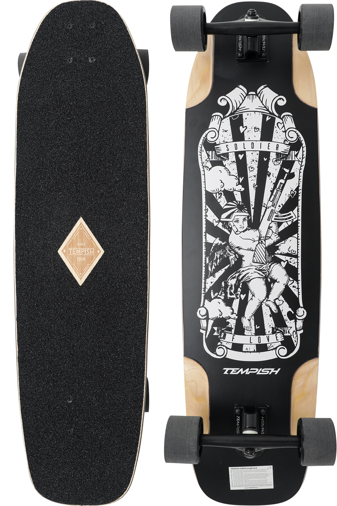
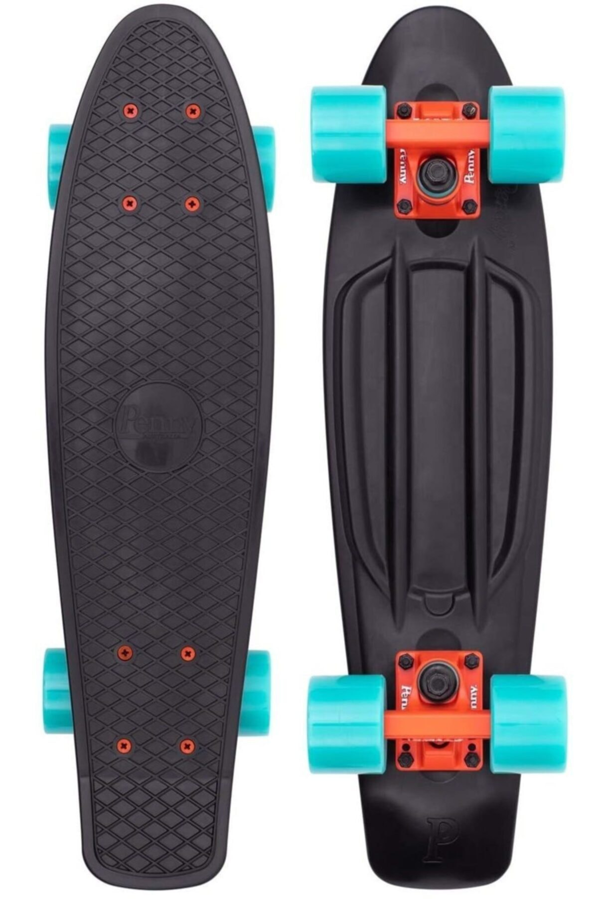
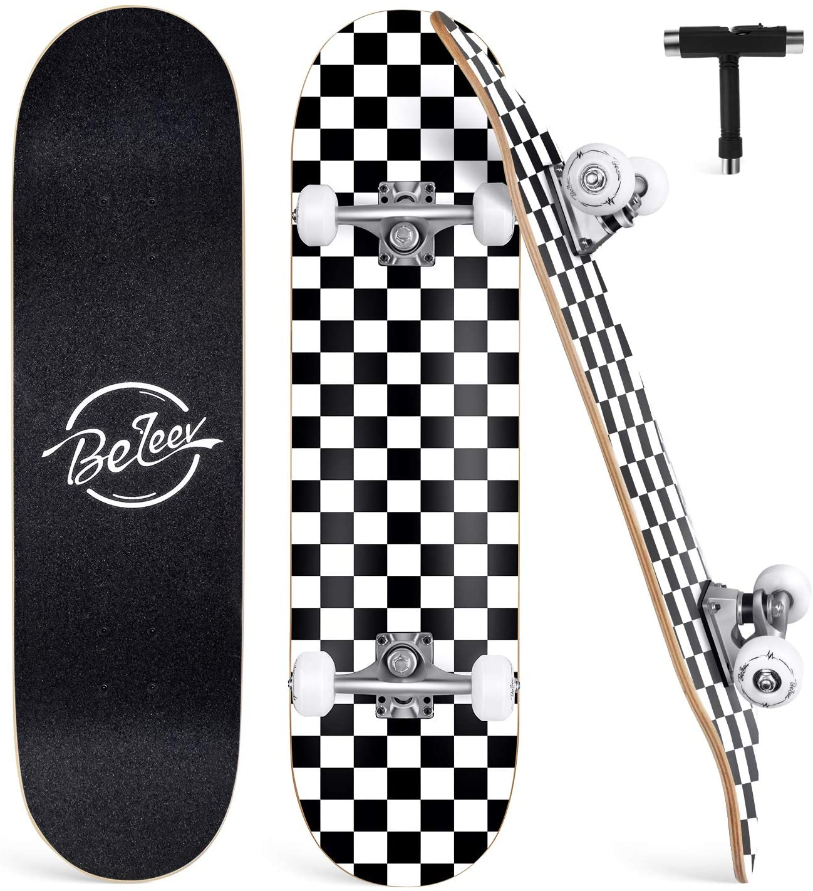

A longboard is a type of skateboard. It is often longer than a conventional skateboard and has a wide variety of shapes. It tends to be faster because of wheel size, construction materials and more precise hardware.
Longboards are commonly used for cruising, traveling and downhill racing, known as longboarding. Longboard 'dancing' and 'freestyle' are also becoming more popular styles, in which the rider uses skateboard-like motions and steps up and down the board, generally in a fluid manner.
A Penny board is a type of skateboard that is characterised by a short and narrow plastic deck.
Although such skateboards were first manufactured during the 1970s, their name and contemporary popularity comes from the Australian brand Penny Skateboards, founded in 2010.
The company's name has since been widely genericised to describe all small plastic skateboards.
A skateboard is a type of sports equipment used for skateboarding. They are usually made of a specially designed 7-8 ply maple plywood deck and polyurethane wheels attached to the underside by a pair of skateboarding trucks.
The skateboarder moves by pushing with one foot while the other foot remains balanced on the board, or by pumping one's legs in structures such as a bowl or half pipe.
The shape of the "Old school" boards (those made in the 1970s–80s or modern boards that mimic their shape) are generally wider and often have only one kicktail. Variants of the 1970s often have little or no concavity.
